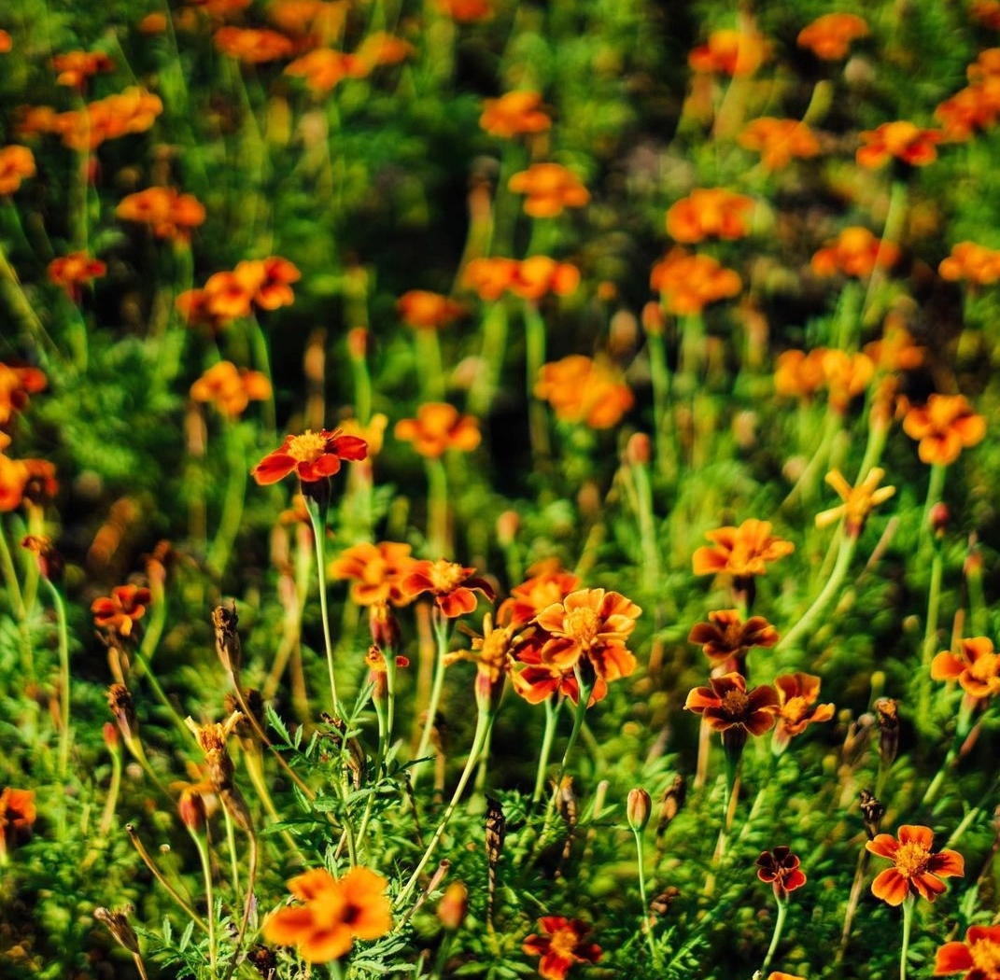
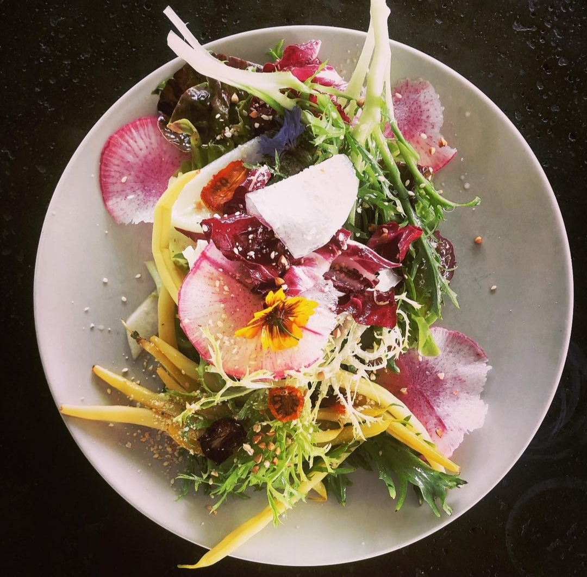
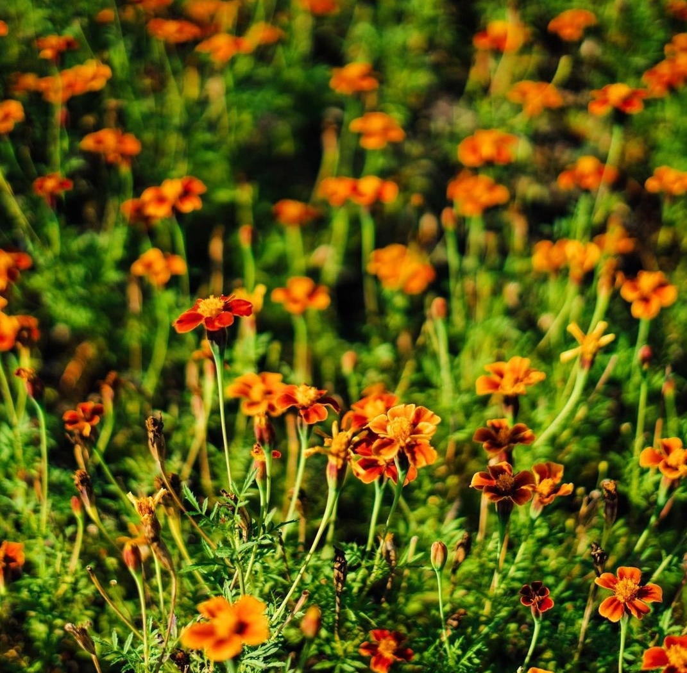
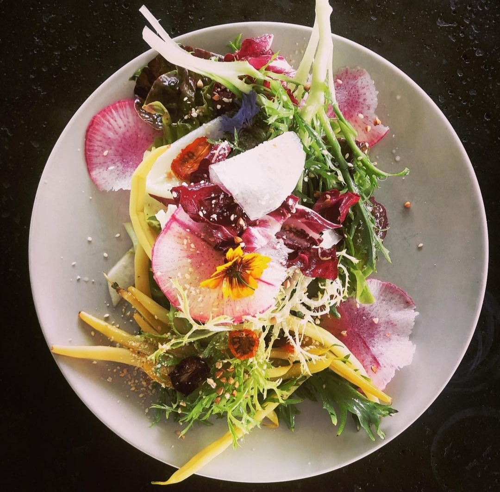

Cocina con vida
Abrir la puerta de "Cocina con Vida" es tomar el camino mas corto del productor al consumidor.
En nuestro menu reunimos los productos de la Chacra Santa Rita, la mejor produccion organica local.
Comida natural, Vegana, Sin T.A.C.C.
Alimentos de calidad de produccion bio y sustentable, cultivados bajo estrictas normas de respeto a todos los ecosistemas y a precio justo.
About us
Frutas y verduras 100% organicas
En la Chacra Santa Rita producimos frutas y verduras 100% organicas y libres de pesticidas, cultivadas respetando el ritmo de crecimiento natural y cosechados en su maduracion optima.
Somos productores de frutas y verduras organicas y orgullosos de serlo, trabajamos cotidianamente la tierra respetando su capacidad de produccion.
En nuestra huerta de...mts de superficie ubicada en ...Lago Puelo producimos desde hace ..años ... variedades de..(numeros y porcentajes pa' impresionar) Desde 19.. cultivamos frutas y verduras biologicas 100% organicas, promovemos el desarrollo de una alimentacion bio de calidad y accesible a todos, impartiendo clases y creando espacios de huerta comunitaria. Nuestra vocacion es de proponer una gran variedad de verduras organicas, variedades olvidadas o antiguas devolviendo la diversidad de texturas y sabores infinitos y seleccionando las mejores entre ellas."Respetar la tierra que nos alimenta"
100% bio por el respeto de la vida y la tierra.
Chacra Santa Rita
Callejon Santa Rita
Lago Puelo
Cocina con vida
Comida Vegana y sin T.A.C.C.
Onelli y Gral Roca.
Feria Franca
El Bolson
Horarios
Lunes a Sabados de 11 a 15.30